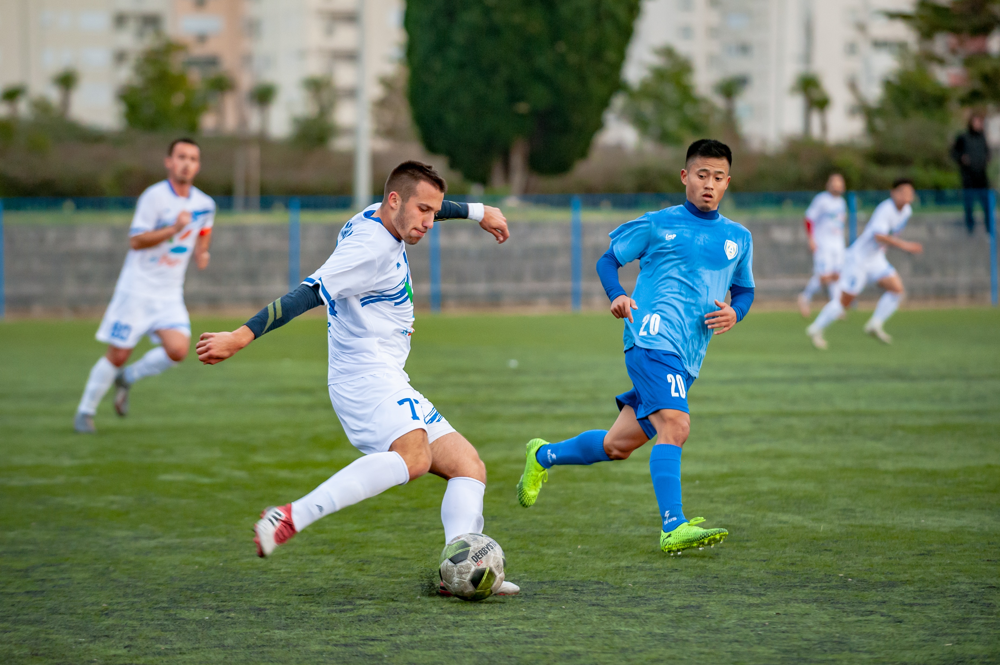

Introduction
Sport refers to any competitive physical activity or game that tries to develop, maintain, or enhance physical ability and skills while also giving enjoyment to players and, in some circumstances, spectators.
Sport is all about coordinating and performing as a team. Sport has its own set of techniques for resolving societal divides. Sport's competitive features suggest practices of inclusion and exclusion. On the sports field, these traditions are implemented spatially, partitioning space between competing teams and individual athletes. This subject, in a larger sense, deals with issues of access and socially excluded identities.
Sport is often seen as a popular and harmless pastime that attracts a large number of people from all walks of life, both as amateur participants and as passionate spectators. Professional and commercial sport, on the other hand, is unavoidably huge business and a battleground for political debates.
In a tournament, a number of competitions may be held in order to choose a champion. Many sports leagues choose an annual champion by scheduling games during a regular season, followed by playoffs in certain circumstances.
Sport is defined as a system of activities centered on physical agility or dexterity, with major tournaments like the Olympic Games allowing only sports that satisfy this criteria. Other organizations, such as the Council of Europe, do not classify activities that do not have a physical component as sports. A variety of competitive but non-physical hobbies, on the other hand, claims to be considered mental sports.
Sport is generally controlled by a set of rules or norms that aim to maintain a level playing field and consistent winner adjudication. Physical actions like as scoring goals or crossing a line first might decide who wins. Judges, who score components of an athletic performance, such as technical performance or artistic impression, using objective or subjective methods, may also decide it.

History
Sport refers to any competitive physical activity or game that tries to develop, maintain, or enhance physical ability and skills while also giving enjoyment to players and, in some circumstances, spectators.
Sport is all about coordinating and performing as a team. Sport has its own set of techniques for resolving societal divides. Sport's competitive features suggest practices of inclusion and exclusion. On the sports field, these traditions are implemented spatially, partitioning space between competing teams and individual athletes. This subject, in a larger sense, deals with issues of access and socially excluded identities.
Sport is often seen as a popular and harmless pastime that attracts a large number of people from all walks of life, both as amateur participants and as passionate spectators. Professional and commercial sport, on the other hand, is unavoidably huge business and a battleground for political debates.
In a tournament, a number of competitions may be held in order to choose a champion. Many sports leagues choose an annual champion by scheduling games during a regular season, followed by playoffs in certain circumstances.
Sport is defined as a system of activities centered on physical agility or dexterity, with major tournaments like the Olympic Games allowing only sports that satisfy this criteria. Other organizations, such as the Council of Europe, do not classify activities that do not have a physical component as sports. A variety of competitive but non-physical hobbies, on the other hand, claims to be considered mental sports.
Sport is generally controlled by a set of rules or norms that aim to maintain a level playing field and consistent winner adjudication. Physical actions like as scoring goals or crossing a line first might decide who wins. Judges, who score components of an athletic performance, such as technical performance or artistic impression, using objective or subjective methods, may also decide it.
Major Sports
Football
What is football, it is a game Which has two teams of 11 players. And it is the world's most popular game which has a number of participants and spectators. In the 12th century the game was developed in England with small rules and as time passed by it developed as football with so many numbers of rules. In the 16th century, it was called “Calcio”. When in the 15th century there were some football clubs but unrecognized and status and those are formed by former school students. In 1862 Sheffield it started a club called “Notts County” and still exists and it is considered the oldest football club. This game can play using any body part except the hands towards to the opposing team goal and the team who scores more gall is considered as the winning team. When in the 20th-century football spread all over Europe and it needs an international organization in 1904 seven Europe countries “Belgium, Denmark, France, Netherlands, Spain, Sweden, and Switzerland” has established its international association called “FIFA” which means Federation International de Football Association. Lately, in 1906 Mr. Danial Woolfall become the president of FIFA, and all of the home nations “England, Scotland, Ireland, and Wales” get membership in 1911. According to the research of FIFA in the 21st Century, there were 250million football players 1.3 billion people were interested in football and the audience is more than 26 billion people around the world. From these time there were so many football legends namely Zico, Marco Van Basten, Ronaldinho, Lev Yashin, Joes Andrade, Eusebio, Sir Bobby Charlton. At present, there were world-famous football stars namely Cristiano Ronaldo, Harry Cane, Lionel Messi. In the next decades' football still, be the world-famous sport.

Boxing
Boxing is a combat sport in which participants fight with their fists. Two or
more fights between the same fighters constitute a boxing rivalry. In 1904,
boxing first appeared in the Olympic games and has been a staple of the
games ever since, except the 1912 Olympics.
Contracts and medical exam reports must be in order before the start of the
bout. The eight(8)ounce gloves are used in every fight from the minimum
weight level up to the Welterweight division, from the super Welterweight
level; through the Heavyweight division, ten(10)ounce gloves must be used
in every fight. The bandage should be made of crepe or gauze and be long
enough to protect the boxer’s hands.
For each hand, the sticky tape must be no more than 2.5 meters long and
2.5 millimeters broad. Every WBC- certified title bout requires anti-doping
testing. A boxer is not allowed to utilize any chemical during or before a
fight that would provide him a psychological or physical advantage over his
opponent.
Any item, material, or equipment utilized in a corner the referee considers
may violate the rules and regulations are subject to inspection and
confiscation by the referee.
Muhammed Ali is a famous boxer from the United States, the greatest was
one of the most flamboyant heavyweights of all time, as well as one of the
finest. After winning gold at the 1960 Olympics, he was the first boxer to
win the heavyweight title three times.
There are basic maneuvers a boxer can use to block punches, slip, sway or
fade, the cover-up the clinch, pulling away are some of them.
In the end, while strength is vital in a fight and relying on it in a street fight
brawl is not a bad choice, boxing is a sport and you are unlikely to confront
an opponent who is larger or smaller than you. Boxing has evolved in such
a way that someone who has more time on their s hand to train can defeat
someone who is with more experience. Boxing has stuck to this principle
throughout its evolution and it can be claimed that the essence of the
sports skills over strength.
Swimming
Swimming is a centuries-old water sport. It is the art of moving oneself
through water using hands and feet. Swimming is considered a sport or a
leisure activity. Its main uses include reducing body temperature, exercise,
relaxation, and sports training. Swimming done a spare time is a great way
to relax. Swimming can be quite beneficial to patients with impairments.
Competitive swimming became popular in the 19 th century. However, in
1538 the first swimming book called ‘A Dialogue on the Art of Swimming’
was written by a man named Nikolaus Wynmann. In 1896 swimming was
included as the first modern games in Olympic played in Athens. The front
crawl was first introduced to the world in 1902. The World Swimming
Association was formed in 1908. The butterfly stroke became well known
very quickly. In 1964, Lillian Bonnell won the award for being the first
woman to compete in a swimming competition.
Swimming is well known as a professional sport. International swimmers
are sponsored by different companies across the world. Winners of big
competitions are also granted cash awards and prizes.
In competitive swimming, there are four major styles have been
established. They are, Butterfly, Backstroke, Breaststroke, Freestyle etc.
Only one of these styles may be utilized in competition, except the
individual medley or IM, which includes all four. Swimmers compete in this
event by swimming equal distances in butterfly, backstroke, breaststroke,
and freestyle. In the Olympic competition, this event swims in two distances
200 and 400 meters. The 100 yards or 100-meter individual medley is also
featured in some short course competitions,
There are several types of officials, such as Referee, Starter, Clerk, of
course, Timekeepers, judges of stroke, which are needed to manage the
competition. Swimsuit, swim cap, goggles, swim fins, drag suit, hand
paddles are some swimwear when needed in swimming. Briefs and
jammers are the most popular swimwear for males. They generally swim
barechested, women wear one-piece or two-piece suits with thicker and
higher backs for competition.
However, at any age people can swim, for swimming, there is no weight
limit because it is a non-weight-bearing exercise. It is gentle on the human
body’s joints. Most importantly there are physical benefits of swimming,
lower stress levels, and help in the burning of calories. As a result, it is an
effective weight loss exercise.
Badminton
Badminton is a sport in players two opposite players single or doubles played by using rackets and shooting to the shuttlecock with their rackets passing through over the net which divides the court as half final the shuttlecock has touched the ground it gets one point the player who shot it. The history of badminton goes to ancient Greece but in the 16th century in Japan, there was also a game called “Hanetsuki” Very similar to badminton. In 1873 badminton is launched and it was owned by “The Duke of Beaufort” and officially named Badminton. The international Badminton Federating (IBF) was established in 1934 with Canada, Denmark, England, France, Netherland, Ireland, New Zealand, Scotland, and Wales as founder members, and in 1936 India affiliated to IBF. Not only that badminton is a top-level physical fitness development game with include Strength endurance, Muscular Power, Speed. Commonwealth games also have badminton as a team event for both men and women. And it is in the 11-game position in the world. Lately, IBF was traditionally dominated by a few Asian countries Denmark, China, Indonesia, South Korea, Malaysia. Nowadays badminton is very famous in the Asian region and China being most dominant in recent years. The newest research has shown that more than 1.1 billion people watched badminton on television and top-level badminton countries are China, Korea, and Indonesia. And Australia won 11 badminton medals at the commonwealth games and badminton was introduced to the commonwealth games in Mr. Kingston Jamaica in 1966. The legends of badminton are namely Lin Dan, Lee Chong Wei, Tony Gunawan, Peter Gade, Lee Young Dae. And the current famous badminton players are Viktor Axelsen, Kento Momata, Anders Antonsen.